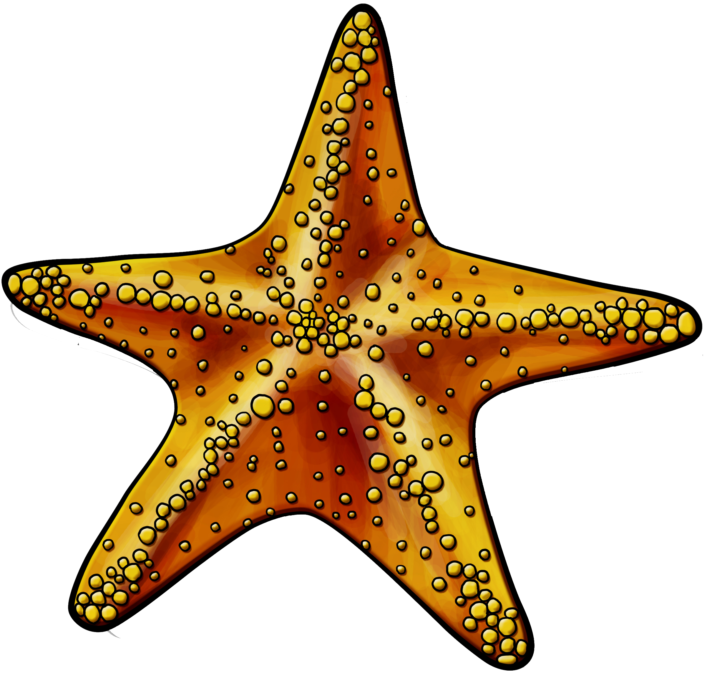
Zeester
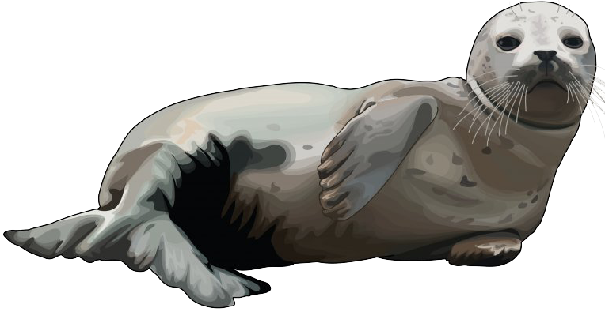
Zeehond
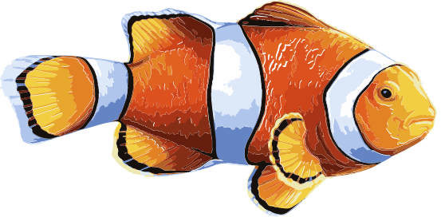
Nemo
SUNLIGHT ZONE
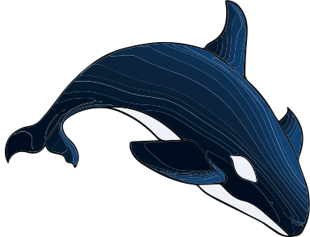
Orka
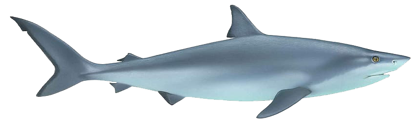
Stierhaai
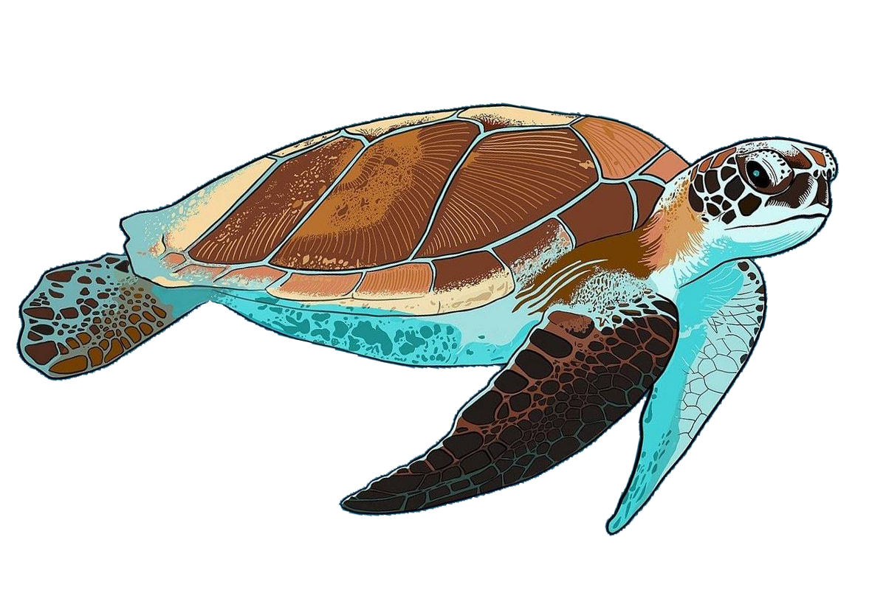
Zee schildpad
The Twilight zone
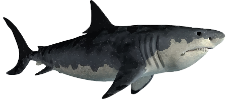
Witte haai
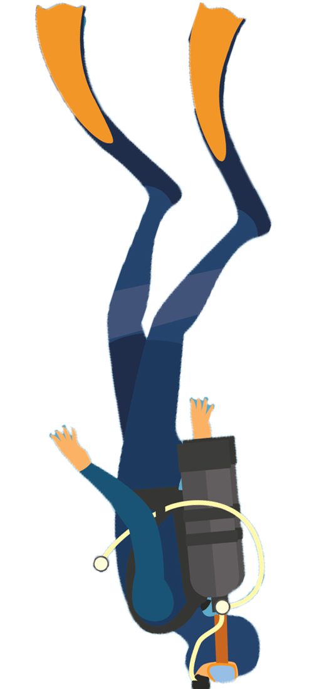
Mens
Ahmed, een 41 jarige egyptenaar, heeft het record diepste scuba dive gehaald met een diepte van 332.35 m
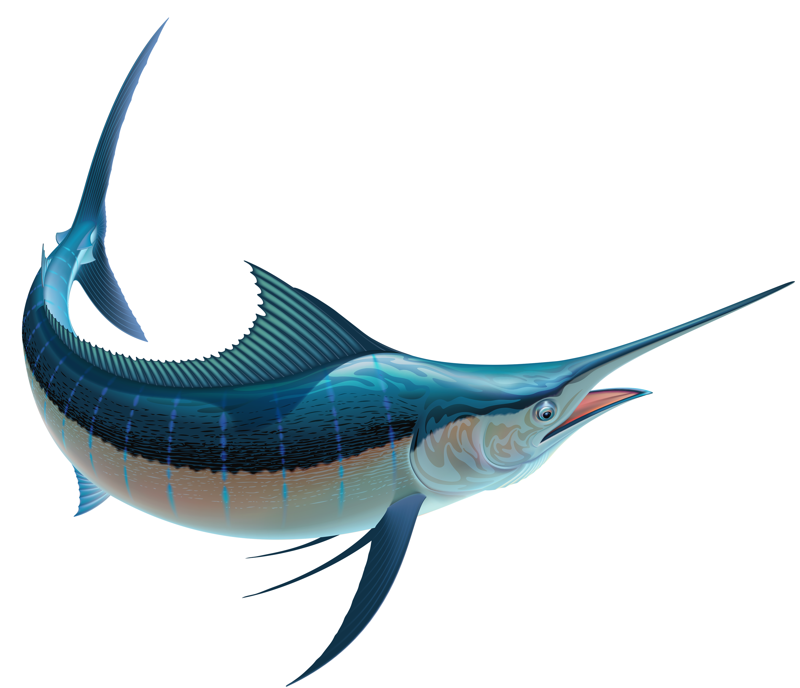
Zwaarvis
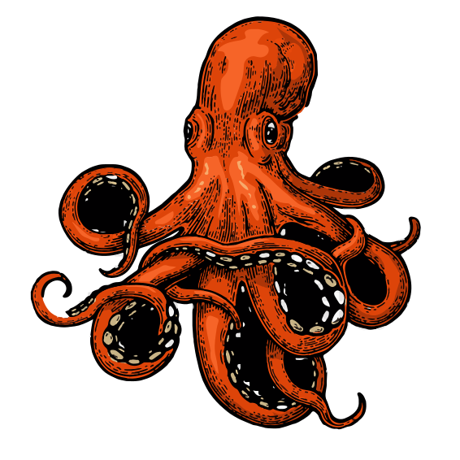
Giant pacific octopus
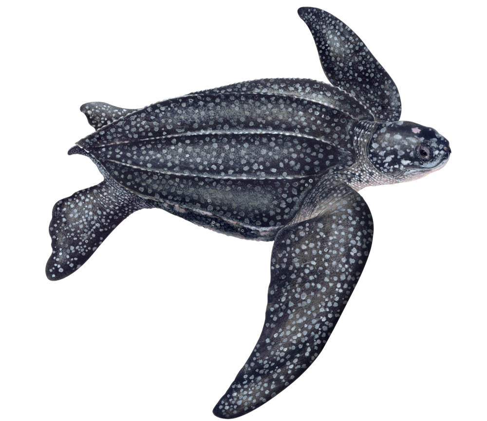
Lederschildpad
Lederschilpadden zijn er al voor 100 miljoen jaar geleden, zij zijn ook de oudste schildpadsoort
THE MIDNIGHT ZONE
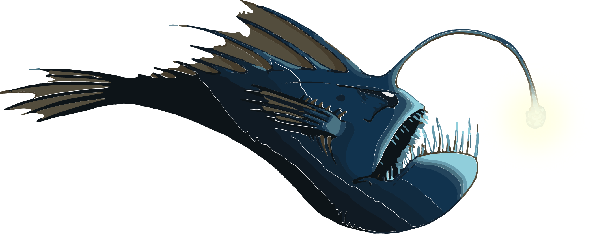
zeeduivel
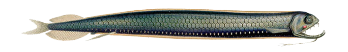
Dragonfish

Narwhale
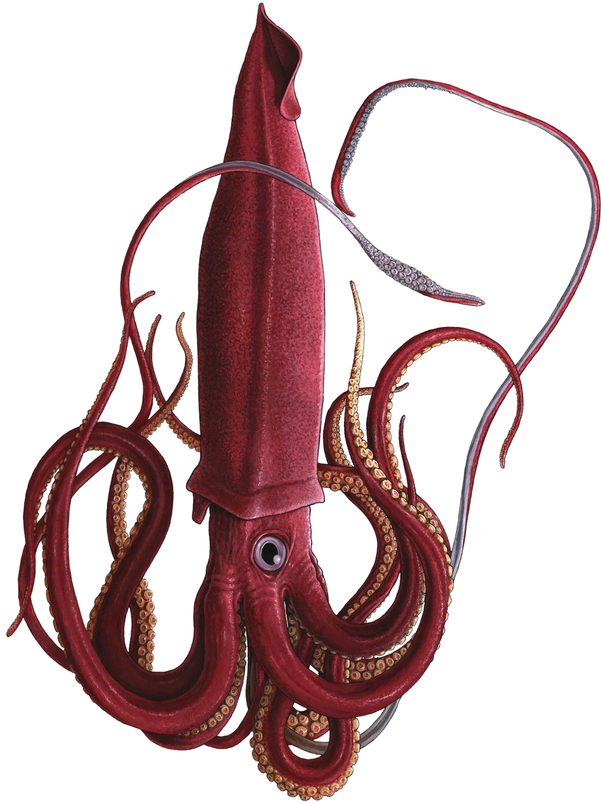
Colossal squid
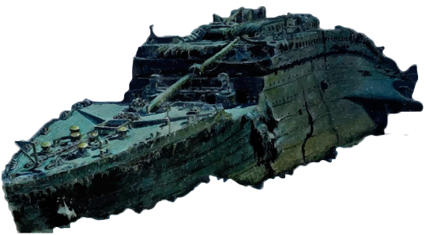
RMS Titanic
De bekende RMS Titanic zonk in 1912 ligt nu om een diepte van 3810meter
THE ABYSSEL ZONE
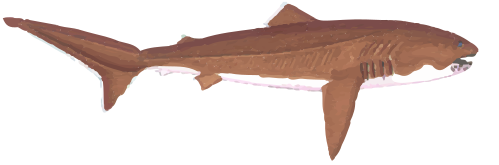
Megamouth shark
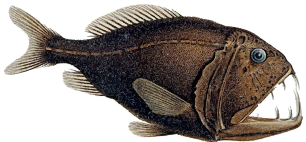
Anoplogaster cornuta(fangtooth)
THE HADAL ZONE
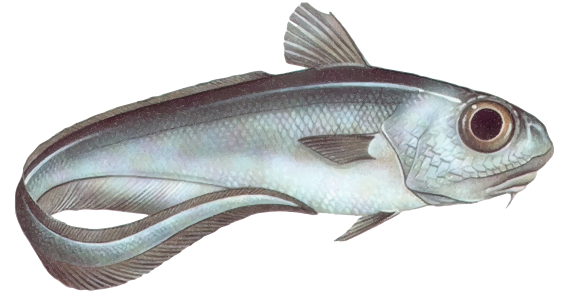
Grenadier
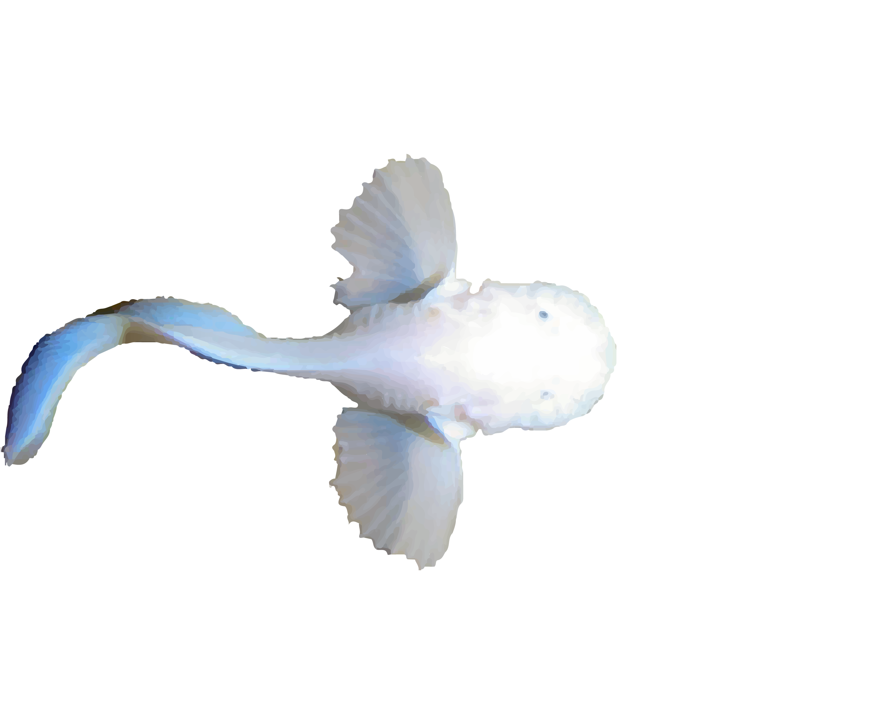
Pseudoliparis amblystomopsis(hadal snailfish)
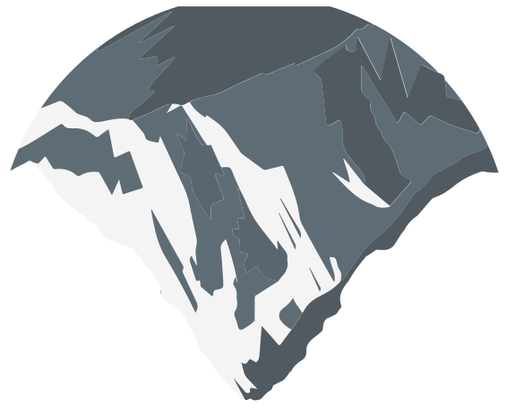
Mount everest
Mount Everest omgekeerd in het water zou een diepte bereiken van 8848,04m
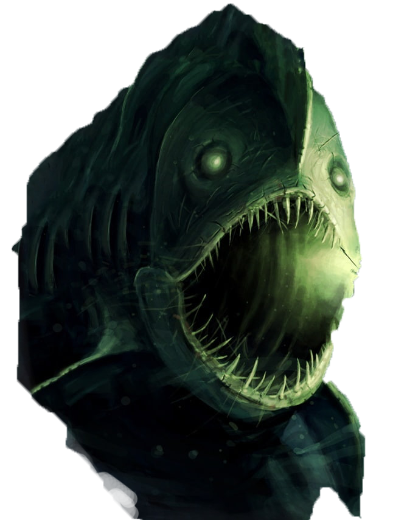
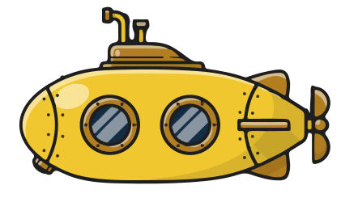
Challenger Deep
Ocean fotograaf Jacques Piccard en Lt. Don Walsh hebben in het jaar 1960 het diepste punt op aarde bereikt